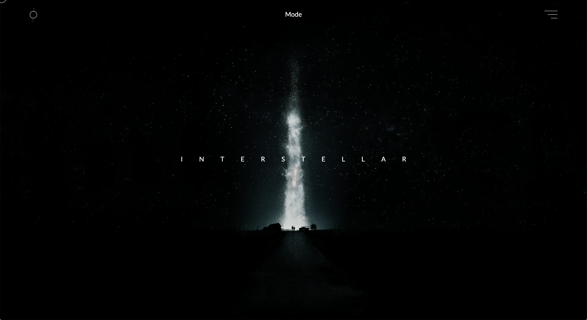
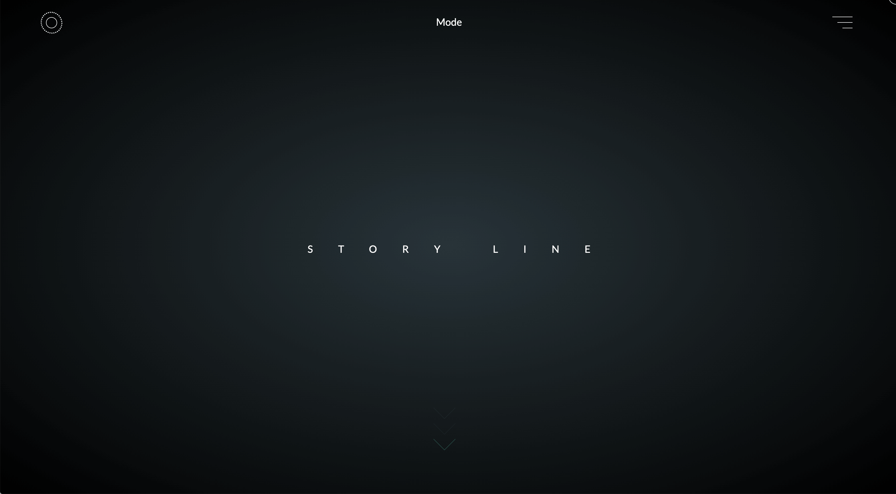

<!DOCTYPE html>
<html lang="ko">
<head>
    <meta charset="UTF-8">
    <meta name="viewport" content="width=device-width, initial-scale=1.0">
    <title>SJH Portfolio</title>
    <link rel="stylesheet" href="./style/reset.css">
    <link rel="stylesheet" href="./style/interstellar.css">
</head>


<body>

    <header>
        <a href="main.html" class="logo">
            XY&Z
        </a>
        <nav class="nav">
            <div class="nav_bar">
                <span class="nav_bar_1"></span>
                <span class="nav_bar_2"></span>
                <span class="nav_bar_3"></span>
            </div>
        </nav>
    </header>

    <section>
        <div class="title">Interstellar</div>
        
        <article class="project">
            

            <div class="sticky_wrap">
                <div class="sticky_Title">Interstellar</div>
                <div class="txtwrap"> 
                    <ul>
                        <li><span> Tools / </span><br /> HTML / CSS / JavaScript / Three.Js / Maya</li>
                        <li><span> Date / </span><br /> 2020</li>
                    </ul>
                    <p class="explain">
                        영화 인터스텔라 웹사이트 제작 프로젝트입니다.<br />
                        영화 출연진, 줄거리를 소개하는 웹사이트를 만들었고 우주의 느낌을 살리기 위해 어두운톤으로 제작하였습니다. <br />
                        Three.js를 활용하여 3D컨셉을 추가하였습니다.2D그래픽에서는 한계가 있었던 우주의 느낌과 행성,<br />
                        오브젝트들을 추가하여 사용자의 흥미를 유도하였습니다.
                    </p>
                </div> 
                <div class="about">
                    
                </div>
                <div class="story">
                    
                </div>
             </div>


        </article>

    </section>


    <footer>
        <a href="#">Next</a>
    </footer>

    <script src="./script/interstellar.js"></script>
</body>


</html>